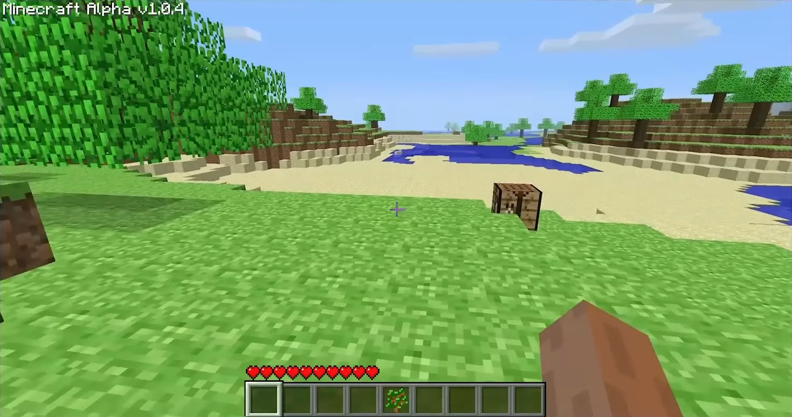
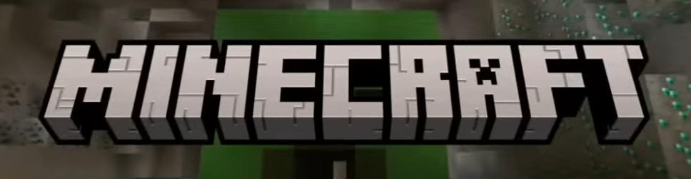
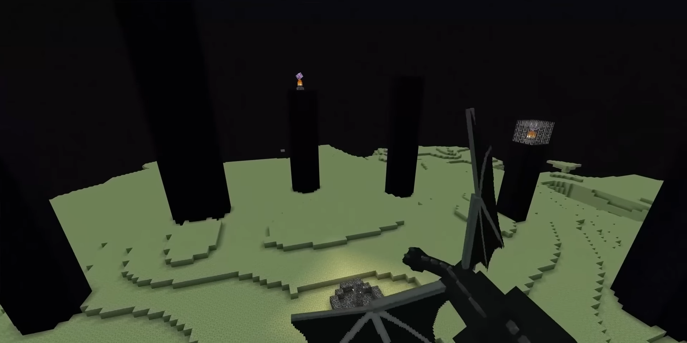
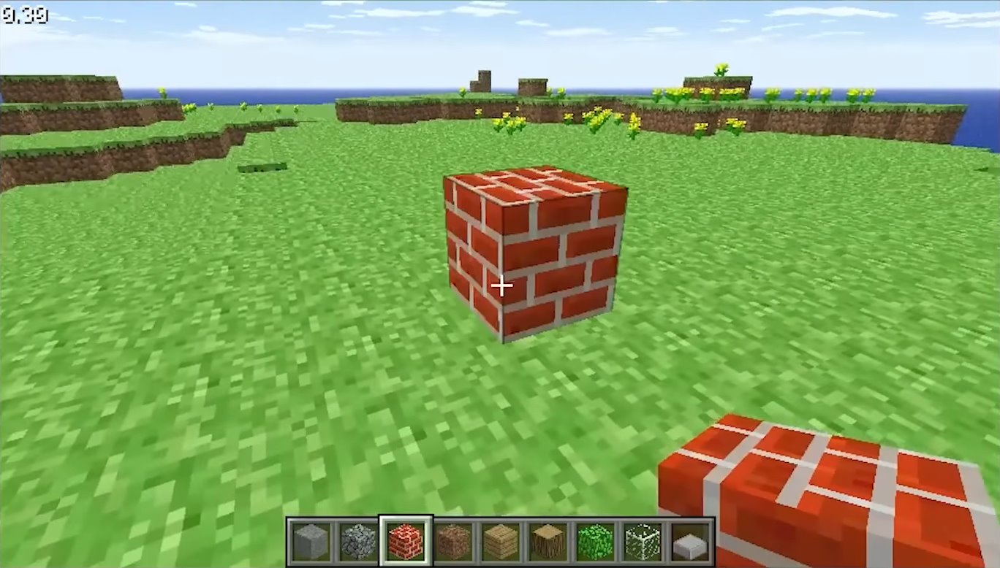

Выживание
Собирай ресурсы, строй укрытие и готовься к ночи. Режим выживания учит планированию и внимательности.


Три причины, почему игра остается культовой

Собирай ресурсы, строй укрытие и готовься к ночи. Режим выживания учит планированию и внимательности.

Создавай инструменты, броню и полезные блоки. Система рецептов делает прогресс понятным и интересным.
Биомы, пещеры, деревни и данжи дают постоянное ощущение открытия. В каждом мире своя уникальная история.
Переходи в раздел гайдов: там есть базовый план действий, советы по добыче ресурсов и тактика выживания ночью.